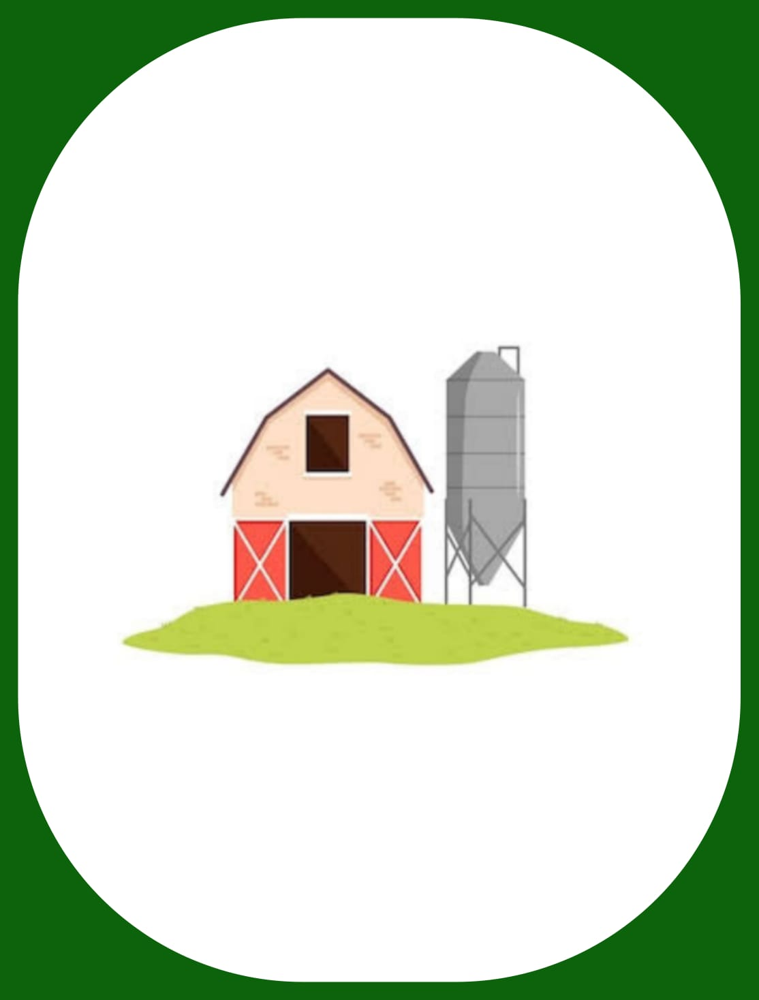

ALGUMAS DESSAS TECS:

Inteligência Artificial (IA):
A IA é usada para analisar grandes volumes de dados, prever padrões climáticos, otimizar o uso de recursos e melhorar o manejo de culturas. Isso ajuda os agricultores a tomarem decisões mais estratégicas.
Biopesticidas e Biofertilizantes:
Esses produtos são derivados de organismos vivos e são utilizados para controlar pragas e fornecer nutrientes às plantas de forma mais sustentável, reduzindo o uso de produtos químicos sintéticos.
Cultivo de Precisão com Mapas de Solo:
Mapas detalhados do solo ajudam os agricultores a entender a variabilidade nas propriedades do solo em suas terras, permitindo ajustes específicos no manejo para maximizar os rendimentos.
Faça uma resenha!
Escreva e avalie sobre oque achou do nosso Site!
Nos mande um Email!